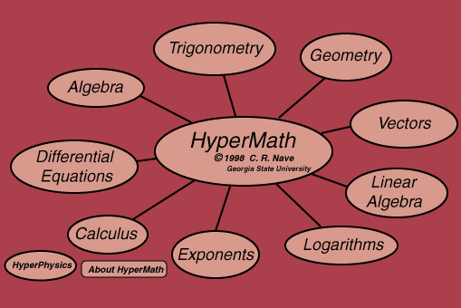

|
Math References MathWorld SOS Math | ||
|
Go Back |
About HyperMath: HyperMath is a growing collection of examples of applied mathematics with links to their applications to problems in physics and astronomy. It is not systematic or complete in any sense, but is a collection of foundation mathematics principles and applications which were collected as the need was encountered in developing the HyperPhysics material. |
Index | ||
|
Go Back |